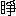

二日の
眞夜中――せめて、たゞ
夜の
明くるばかりをと、
一時千秋の
思で
待つ――
三日の
午前三時、
半ばならんとする
時であつた。……
殆ど、
五分置き
六分置きに
搖返す
地震を
恐れ、また
火を
避け、はかなく
燒出された
人々などが、おもひおもひに、
急難、
危厄を
逃げのびた、
四谷見附そと、
新公園の
内外、
幾千萬の
群集は、
皆苦き
睡眠に
落ちた。……
殘らず
眠つたと
言つても
可い。
荷と
荷を
合せ、ござ、
筵を
鄰して、
外濠を
隔てた
空の
凄じい
炎の
影に、
目の
及ぶあたりの
人々は、
老も
若きも、
算を
亂して、ころ／＼と
成つて、そして
萎たやうに
皆倒れて
居た。
――
言ふまでの
事ではあるまい。
昨日……
大正十二
年九
月一
日午前十一
時五十八
分に
起つた
大地震このかた、
誰も
一睡もしたものはないのであるから。
麹町、
番町の
火事は、
私たち
鄰家二三軒が、
皆跣足で
逃出して、
此の
片側の
平家の
屋根から
瓦が
土煙を
揚げて
崩るゝ
向側を
駈拔けて、いくらか
危險の
少なさうな、
四角を
曲つた、
一方が
廣庭を
圍んだ
黒板塀で、
向側が
平家の
押潰れても、
一二尺の
距離はあらう、
其の
黒塀に
眞俯向けに
取り
縋つた。……
手のまだ
離れない
中に、さしわたし
一町とは
離れない
中六番町から
黒煙を
揚げたのがはじまりである。――
同時に、
警鐘を
亂打した。が、
恁くまでの
激震に、
四谷見附の、
高い、あの、
火の
見の
頂邊に
活きて
人があらうとは
思はれない。
私たちは、
雲の
底で、
天が
摺半鐘を
打つ、と
思つて
戰慄した。――「
水が
出ない、
水道が
留まつた」と
言ふ
聲が、
其處に
一團に
成つて、
足と
地とともに
震へる
私たちの
耳を
貫いた。
息つぎに
水を
求めたが、
火の
注意に
水道の
如何を
試みた
誰かが、
早速に
警告したのであらう。
夢中で
誰とも
覺えて
居ない。
其の
間近な
火は
樹に
隱れ、
棟に
伏つて、
却つて、
斜の
空はるかに、
一柱の
炎が
火を
捲いて
眞直に
立つた。
續いて、
地軸も
碎くるかと
思ふ
凄じい
爆音が
聞えた。
婦たちの、あつと
言つて
地に
領伏したのも
少くない。その
時、
横町を
縱に
見通しの
眞空へ
更に
黒煙が
舞起つて、
北東の
一天が
一寸を
餘さず
眞暗に
代ると、
忽ち、どゞどゞどゞどゞどゞと
言ふ、
陰々たる
律を
帶びた
重く
凄い、
殆ど
形容の
出來ない
音が
響いて、
炎の
筋を
蜿らした
可恐い
黒雲が、
更に
煙の
中を
波がしらの
立つ
如く、
烈風に
駈
る！……あゝ
迦具土の
神の
鐵車を
驅つて
大都會を
燒亡す
車輪の
轟くかと
疑はれた。――「あれは
何の
音でせうか。」――「
然やう
何の
音でせうな。」
近鄰の
人の
分別だけでは
足りない。
其處に
居合はせた
禿頭白髯の、
見も
知らない
老紳士に
聞く
私の
聲も
震へれば、
老紳士の
脣の
色も、
尾花の
中に、たとへば、なめくぢの
這ふ
如く
土氣色に
變つて
居た。
――
前のは
砲兵工廠の
焚けた
時で、
續いて、
日本橋本町に
軒を
連ねた
藥問屋の
藥ぐらが
破裂したと
知つたのは、
五六日も
過ぎての
事。……
當時のもの
可恐さは、われ
等の
乘漾ふ
地の
底から、
火焔を
噴くかと
疑はれたほどである。
が、
銀座、
日本橋をはじめ、
深川、
本所、
淺草などの、
一時に
八ヶ
所、
九ヶ
所、
十幾ヶ
所から
火の
手の
上つたのに
較べれば、
山の
手は
扨て
何でもないもののやうである、が、それは
後に
言ふ
事で、……
地震とともに
燒出した
中六番町の
火が……いま
言つた、
三日の
眞夜中に
及んで、
約二十六時間。
尚ほ
熾に
燃えたのであつた。
しかし、
其の
當時、
風は
荒かつたが、
眞南から
吹いたので、
聊か
身がつてのやうではあるけれども、
町内は
風上だ。
差あたり、
火に
襲はるゝ
懼はない。
其處で
各自が、かの
親不知、
子不知の
浪を、
巖穴へ
逃げる
状で、
衝と
入つては
颯と
出つゝ、
勝手許、
居室などの
火を
消して、
用心して、それに
第一たしなんだのは、
足袋と
穿もので、
驚破、
逃出すと
言ふ
時に、わが
家への
出入りにも、
硝子、
瀬戸ものの
缺片、
折釘で
怪我をしない
注意であつた。そのうち、
隙を
見て、
縁臺に、
薄べりなどを
持出した。
何が
何うあらうとも、
今夜は
戸外にあかす
覺悟して、まだ
湯にも
水にもありつけないが、
吻と
息をついた
處へ――
前日みそか、
阿波の
徳島から
出京した、
濱野英二さんが
駈けつけた。
英語の
教鞭を
取る、
神田三崎町の
第五中學へ
開校式に
臨んだが、
小使が
一人梁に
挫がれたのと
摺れ
違ひに
逃出したと
言ふのである。
あはれ、
此こそ
今度の
震災のために、
人の
死を
聞いたはじめであつた。――たゞ
此にさへ、
一同は
顏を
見合はせた。
内の
女中の
情で。……
敢て
女中の
情と
言ふ。――
此の
際、
臺所から
葡萄酒を
二罎持出すと
言ふに
到つては
生命がけである。けちに
貯へた
正宗は
臺所へ
皆流れた。
葡萄酒は
安値いのだが、
厚意は
高價い。たゞし
人目がある。
大道へ
持出して、
一杯でもあるまいから、
土間へ
入つて、
框に
堆く
崩れつんだ
壁土の
中に、あれを
見よ、
蕈の
生えたやうな
瓶から、
逃腰で、
茶碗で
呷つた。
言ふべき
場合ではないけれども、まことに
天の
美祿である。
家内も
一口した。
不斷一滴も
嗜まない、
一軒となりの
齒科の
白井さんも、
白い
仕事着のまゝで
傾けた。
これを
二碗と
傾けた
鄰家の
辻井さんは
向う
顱卷膚脱ぎの
元氣に
成つて、「さあ、こい、もう
一度搖つて
見ろ。」と
胸を
叩いた。
婦たちは
怨んだ。が、
結句此がために
勢づいて、
茣蓙縁臺を
引摺り／＼、とにかく
黒塀について、
折曲つて、
我家々々の
向うまで
取つて
返す
事が
出來た。
襖障子が
縱横に
入亂れ、
雜式家具の
狼藉として、
化性の
如く、
地の
震ふたびに
立ち
跳る、
誰も
居ない、
我が
二階家を、
狹い
町の、
正面に
熟と
見て、
塀越のよその
立樹を
廂に、
櫻のわくら
葉のぱら／＼と
落ちかゝるにさへ、
婦は
聲を
發て、
男はひやりと
肝を
冷して
居るのであつた。が、もの
音、
人聲さへ
定かには
聞取れず、たまに
駈る
自動車の
響も、
燃え
熾る
火の
音に
紛れつゝ、
日も
雲も
次第々々に
黄昏れた。
地震も、
小やみらしいので、
風上とは
言ひながら、
模樣は
何うかと、
中六の
廣通りの
市ヶ
谷近い
十字街へ
出て
見ると、
一度やゝ
安心をしただけに、
口も
利けず、
一驚を
喫した。
半町ばかり
目の
前を、
火の
燃通る
状は、
眞赤な
大川の
流るゝやうで、
然も
凪ぎた
風が
北に
變つて、
一旦九段上へ
燒け
拔けたのが、
燃返つて、
然も
低地から、
高臺へ、
家々の
大巖に
激して、
逆流して
居たのである。
もはや、……
少々なりとも
荷もつをと、きよと／＼と
引返した。が、
僅にたのみなのは、
火先が
僅ばかり、
斜にふれて、
下、
中、
上の
番町を、
南はづれに、
東へ……
五番町の
方へ
燃進む
事であつた。
火の
雲をかくした
櫻の
樹立も、
黒塀も
暗く
成つた。
舊暦七
月二十一
日ばかりの
宵闇に、
覺束ない
提灯の
灯一つ
二つ、
婦たちは
落人が
夜鷹蕎麥の
荷に
踞んだ
形で、
溝端で、のどに
支へる
茶漬を
流した。
誰ひとり
晝食を
濟まして
居なかつたのである。
火を
見るな、
火を
見るな、で、
私たちは、すぐ
其の
傍の
四角に
彳んで、
突通しに
天を
浸す
炎の
波に、
人心地もなく
醉つて
居た。
時々、
魔の
腕のやうな
眞黒な
煙が、
偉なる
拳をかためて、
世を
打ちひしぐ
如くむく／＼
立つ。
其處だけ、
火が
消えかゝり、
下火に
成るのだらうと、
思つたのは
空頼みで「あゝ、
惡いな、あれが
不可え。……
火の
中へふすぶつた
煙の
立つのは
新しく
燃えついたんで……」と
通りかゝりの
消防夫が
言つて
通つた――
（――
小稿……まだ
持出しの
荷も
解かず、
框をすぐの
小間で……こゝを
草する
時……
「
何うしました。」
と、はぎれのいゝ
聲を
掛けて、
水上さんが、
格子へ
立つた。
私は、
家内と
駈出して、ともに
顏を
見て
手を
握つた。――
悉い
事は
預るが、
水上さんは、
先月三十一
日に、
鎌倉稻瀬川の
別莊に
遊んだのである。
別莊は
潰れた。
家族の
一人は
下敷に
成んなすつた。が、
無事だつたのである。――
途中で
出あつたと
言つて、
吉井勇さんが
一所に
見えた。これは、
四谷に
居て
無事だつた。が、
家の
裏の
竹藪に
蚊帳を
釣つて
難を
避けたのださうである――）
――
前のを
續ける。……
其處へ――
「
如何。」
と
聲を
掛けた
一人があつた。……
可懷い
聲だ、と
見ると、

さんである。
「やあ、
御無事で。」
さんは、
手拭を
喧嘩被り、
白地の
浴衣の
尻端折で、いま
逃出したと
言ふ
形だが、
手を
曳いて……は
居なかつた。
引添つて、
手拭を
吉原かぶりで、
艷な
蹴出しの
褄端折をした、
前髮のかゝり、
鬢のおくれ
毛、
明眸皓齒の
婦人がある。しつかりした、さかり
場の
女中らしいのが、もう
一人後についてゐる。
執筆の
都合上、
赤坂の
某旅館に
滯在した、
家は
一堪りもなく
潰れた。――
不思議に
窓の
空所へ
橋に
掛つた
襖を
傳つて、
上りざまに
屋根へ
出て、それから
山王樣の
山へ
逃上つたが、
其處も
火に
追はれて
逃るゝ
途中、おなじ
難に
逢つて
燒出されたため、
道傍に
落ちて
居た、
此の
美人を
拾つて
來たのださうである。
正面の
二階の
障子は
紅である。
黒塀の、
溝端の
茣蓙へ、
然も
疲れたやうに、ほつと、くの
字に
膝をついて、
婦連がいたはつて
汲んで
出した、ぬるま
湯で、
輕く
胸をさすつた。その
婦の
風情は
媚かしい。
やがて、
合方もなしに、
此の
落人は、すぐ
横町の
有島家へ
入つた。たゞで
通す
關所ではないけれど、
下六同町内だから
大目に
見て
置く。
次手だから
話さう。
此と
對をなすのは
淺草の
万ちやんである。お
京さんが、
圓髷の
姉さんかぶりで、
三歳のあかちやんを
十の
字に
背中に
引背負ひ、たびはだし。
万ちやんの
方は
振分の
荷を
肩に、わらぢ
穿で、
雨のやうな
火の
粉の
中を
上野をさして
落ちて
行くと、
揉返す
群集が、
「
似合ひます。」
と
湧いた。ひやかしたのではない、まつたく
同情を
表したので、
「いたはしいナ、
畜生。」
と
言つたと
言ふ――
眞個か
知らん、いや、
嘘でない。
此は
私の
内へ
來て（
久保勘）と
染めた
印半纏で、
脚絆の
片あしを
擧げながら、
冷酒のいきづきで
御當人の
直話なのである。
「
何うなすつて。」
少時すると、うしろへ
悠然として
立つた
女性があつた。
「あゝ……いまも
風説をして、
案じて
居ました。お
住居は
澁谷だが、あなたは
下町へお
出掛けがちだから。」
と
私は
息をついて
言つた、
八千代さんが
來たのである、
四谷坂町の
小山内さん（
阪地滯在中）の
留守見舞に、
澁谷から
出て
來なすつたと
言ふ。……
御主人の
女の
弟子が、
提灯を
持つて
連立つた。
八千代さんは、
一寸薄化粧か
何かで、
鬢も
亂さず、
杖を
片手に、しやんと、きちんとしたものであつた。
「
御主人は？」
「……
冷藏庫に、
紅茶があるだらう……なんか
言つて、
呆れつ
了ひますわ。」
是は
偉い！……
畫伯の
自若たるにも
我折つた。が、
御當人の、すまして、これから
又澁谷まで
火を
潛つて
歸ると
言ふには
舌を
卷いた。
「
雨戸をおしめに
成らんと
不可ません。
些と
火の
粉が
見えて
來ました。あれ、
屋根の
上を
飛びます。……あれがお
二階へ
入りますと、まつたく
危うございますで、ございますよ。」
と
餘所で……
經驗のある、
近所の
産婆さんが
注意をされた。
實は、
炎に
飽いて、
炎に
背いて、
此の
火たとひ
家を
焚くとも、せめて
清しき
月出でよ、と
祈れるかひに、
天の
水晶宮の
棟は
櫻の
葉の
中に
顯はれて、
朱を
塗つたやうな
二階の
障子が、いま
其の
影にやゝ
薄れて、
凄くも
優しい、
威あつて、
美しい、
薄桃色に
成ると
同時に、
中天に
聳えた
番町小學校の
鐵柱の、
火柱の
如く
見えたのさへ、ふと
紫にかはつたので、
消すに
水のない
劫火は、
月の
雫が
冷すのであらう。
火勢は
衰へたやうに
思つて、
微に
慰められて
居た
處であつたのに――
私は
途方にくれた。――
成程ちら／＼と、……
「ながれ
星だ。」
「いや、
火の
粉だ。」
空を
飛ぶ――
火事の
激しさに
紛れた。が、
地震が
可恐いため
町にうろついて
居るのである。
二階へ
上るのは、いのち
懸でなければ
成らない。
私は
意氣地なしの
臆病の
第一人である。
然うかと
言つて、
焚えても
構ひませんと
言はれた
義理ではない。
濱野さんは、
其の
元園町の
下宿の
樣子を
見に
行つて
居た。――
氣の
毒にも、
其の
宿では
澤山の
書籍と
衣類とを
焚いた。
家内と
二人で、――
飛込まうとするのを
視て、
「
私がしめてあげます。お
待ちなさい。」
白井さんが
懷中電燈をキラリと
點けて、さう
言つて
下すつた。
私は
口吃しつゝ
頭を
下げた。
「
俺も
一番。」
で、
來合はせた
馴染の
床屋の
親方が
一所に
入つた。
白井さんの
姿は、
火よりも
月に
照らされて、
正面の
縁に
立つて、
雨戸は
一枚づゝがら／＼と
閉つて
行く。
此の
勢に
乘つて、
私は
夢中で
駈上つて、
懷中電燈の
燈を
借りて、
戸袋の
棚から、
觀世音の
塑像を
一體、
懷中し、
机の
下を、
壁土の
中を
探つて、なき
父が
彫つてくれた、
私の
眞鍮の
迷子札を
小さな
硯の
蓋にはめ
込んで、
大切にしたのを、
幸ひに
拾つて、これを
袂にした。
私たちは、
其から、
御所前の
廣場を
志して
立退くのに
間はなかつた。
火は、
尾の
二筋に
裂けた、
燃ゆる
大蛇の
兩岐の
尾の
如く、
一筋は
前のまゝ
五番町へ
向ひ、
一筋は、
別に
麹町の
大通を
包んで、
此の
火の
手が
襲ひ
近いたからである。
「はぐれては
不可い。」
「
荷を
棄てても
手を
取るやうに。」
口々に
言ひ
交して、
寂然とした
道ながら、
往來の
慌しい
町を、
白井さんの
家族ともろともに
立退いた。
「
泉さんですか。」
「はい。」
「
荷もつを
持つて
上げませう。」
おなじむきに
連立つた
學生の
方が、
大方居まはりで
見知越であつたらう。
言ふより
早く
引擔いで
下すつた。
私は、
其の
好意に
感謝しながら、
手に
持ちおもりのした
慾を
恥ぢて、やせた
杖をついて、うつむいて
歩行き
出した。
横町の
道の
兩側は、
荷と
人と、
兩側二列の
人のたゝずまひである。
私たちより、もつと
火に
近いのが
先んじて
此の
町内へ
避難したので、……
皆茫然として
火の
手を
見て
居る。
赤い
額、
蒼い
頬――
辛うじて
煙を
拂つた
絲のやうな
殘月と、
火と
炎の
雲と、
埃のもやと、……
其の
間を
地上に
綴つて、
住める
人もないやうな
家々の
籬に、
朝顏の
蕾は
露も
乾いて
萎れつゝ、おしろいの
花は、
緋は
燃え、
白きは
霧を
吐いて
咲いて
居た。
公園の
廣場は、
既に
幾萬の
人で
滿ちて
居た。
私たちは、
其の
外側の
濠に
向つた
道傍に、やう／＼
地のまゝの
蓆を
得た。
「お
邪魔をいたします。」
「いゝえ、お
互樣。」
「
御無事で。」
「あなたも
御無事で。」
つい、
鄰に
居た
十四五人の、
殆ど
十二三人が
婦人の
一家は、
淺草から
火に
追はれ、
火に
追はれて、こゝに
息を
吐いたさうである。
見ると……
見渡すと……
東南に、
芝、
品川あたりと
思ふあたりから、
北に
千住淺草と
思ふあたりまで、
此の
大都の
三面を
弧に
包んで、
一面の
火の
天である。
中を
縫ひつゝ、
渦を
重ねて、
燃上つて
居るのは、われらの
借家に
寄せつゝある
炎であつた。
尾籠ながら、
私はハタと
小用に
困つた。
辻便所も
何にもない。
家内が
才覺して、
此の
避難場に
近い、
四谷の
髮結さんの
許をたよつて、
人を
分け、
荷を
避けつゝ
辿つて
行く。……ずゐぶん
露地を
入組んだ
裏屋だから、
恐る／＼、それでも、
崩れ
瓦の
上を
踏んで
行きつくと、
戸は
開いたけれども、
中に
人氣は
更にない。おなじく
難を
避けて
居るのであつた。
「さあ、
此方へ。」
馴染がひに、
家内が
茶の
間へ
導いた。
「どうも
恐縮です。」
と、うつかり
言つて、
挨拶して、
私たちは
顏を
見て
苦笑した。
手を
淨めようとすると、
白濁りでぬら／＼する。
「
大丈夫よ――かみゆひさんは、きれい
好で、それは
消毒が
入つて
居るんですから。」
私は、とる
帽もなしに、
一禮して
感佩した。
夜が
白んで、もう
大釜の
湯の
接待をして
居る
處がある。
この
歸途に、
公園の
木の
下で、
小枝に
首をうなだれた、
洋傘を
疊んだばかり、バスケツト
一つ
持たない、
薄色の
服を
着けた、
中年の
華奢な
西洋婦人を
視た。――
紙づつみの
鹽煎餅と、
夏蜜柑を
持つて、
立寄つて、
言も
通ぜず
慰めた
人がある。
私は、
人のあはれと、
人の
情に
涙ぐんだ――
今も
泣かるゝ。
二日――
此の
日正午のころ、
麹町の
火は
一度消えた。
立派に
消口を
取つたのを
見屆けた
人があつて、もう
大丈夫と
言ふ
端に、
待構へたのが
皆歸支度をする。
家内も
風呂敷包を
提げて
駈け
戻つた。
女中も
一荷背負つてくれようとする
處を、
其處が
急所だと
消口を
取つた
處から、
再び
猛然として
煤のやうな
煙が
黒焦げに
舞上つた。
渦も
大い。
幅も
廣い。
尾と
頭を
以つて
撃つた
炎の
大蛇は、
黒蛇に
變じて
剩へ
胴中を
蜿らして
家々を
卷きはじめたのである。それから
更に
燃え
續け、
焚け
擴がりつゝ
舐め
近づく。
一度内へ
入つて、
神棚と、せめて、
一間だけもと、
玄關の
三疊の
土を
拂つた
家内が、
又此の
野天へ
逃戻つた。
私たちばかりでない。――
皆もう
半ば
自棄に
成つた。
もの
凄いと
言つては、
濱野さんが、
家内と
一所に
何か
罐詰のものでもあるまいかと、
四谷通へ
夜に
入つて
出向いた
時だつた。……
裏町、
横通りも、
物音ひとつも
聞えないで、
靜まり
返つた
中に、
彼方此方の
窓から、どしん／＼と
戸外へ
荷物を
投げて
居る。
火は
此處の
方が
却つて
押つゝまれたやうに
激しく
見えた。
灯一つない
眞暗な
中に、
町を
歩行くものと
言つては、まだ
八時と
言ふのに、
殆ど
二人のほかはなかつたと
言ふ。
罐詰どころか、
蝋燭も、
燐寸もない。
通りかゝつた
見知越の、みうらと
言ふ
書店の
厚意で、
茣蓙を
二枚と、
番傘を
借りて、
砂の
吹きまはす
中を
這々の
體で
歸つて
來た。
で、
何につけても、
殆どふて
寢でもするやうに、
疲れて
倒れて
寢たのであつた。
却説――その
白井さんの
四歳に
成る
男の
兒の、「おうちへ
歸らうよ、
歸らうよ。」と
言つて、うら
若い
母さんとともに、
私たちの
胸を
疼ませたのも、その
母さんの
末の
妹の十一二に
成るのが、
一生懸命に
學校用の
革鞄一つ
膝に
抱いて、
少女のお
伽の
繪本を
開けて、「
何です。こんな
處で。」と、
叱られて、おとなしくたゝんで、ほろりとさせたのも、
宵の
間で。……
今はもう
死んだやうに
皆睡つた。――
深夜。
二時を
過ぎても
鷄の
聲も
聞えない。
鳴かないのではあるまい。
燃え
近づく
火の、ぱち／＼／＼、ぐわう／＼どツと
鳴る
音に
紛るゝのであらう。
唯此時、
大路を
時に
響いたのは、
肅然たる
騎馬のひづめの
音である。
火のあかりに
映るのは
騎士の
直劍の
影である。
二人三人づゝ、いづくへ
行くとも
知らず、いづくから
來るとも
分かず、とぼ／＼した
女と
男と、
女と
男と、
影のやうに
辿ひ


ふ。
私はじつとして、
又たゞひとへに
月影を
待つた。
白井さんの
家族が
四人、――
主人はまだ
燒けない
家を
守つてこゝにはみえない――
私たちと、……
濱野さんは
八千代さんが
折紙をつけた、いゝ
男ださうだが、
仕方がない。
公園の
圍の
草畝を
枕にして、うちの
女中と
一つ
毛布にくるまつた。これに
鄰つて、あの
床屋子が、
子供弟子づれで、
仰向けに
倒れて
居る。
僅に
一坪たらずの
處へ、
荷を
左右に
積んで、
此の
人數である。もの
干棹にさしかけの
茣蓙の、しのぎをもれて、
外にあふれた
人たちには、
傘をさしかけて
夜露を
防いだ。
が、
夜風も、
白露も、
皆夢である。
其の
風は
黒く、
其の
露も
赤からう。
唯、こゝに、
低い
草畝の
内側に、
露とともに
次第に
消え
行く、
提灯の
中に、ほの
白く
幽に
見えて、
一張の
天幕があつた。――
晝間赤い
旗が
立つて
居た。
此の
旗が
音もなく
北の
方へ
斜に
靡く。
何處か
大商店の
避難した……
其の
店員たちが
交代に
貨物の
番をするらしくて、
暮れ
方には
七三の
髮で、
眞白で、この
中で
友染模樣の
派手な
單衣を
着た、
女優まがひの
女店員二三人の
姿が
見えた。――
其の
天幕の
中で、
此の
深更に、
忽ち
笛を
吹くやうな、
鳥の
唄ふやうな
聲が
立つた。
「……
泊つて
行けよ、
泊つて
行けよ。」
「
可厭よ、
可厭よ、
可厭よう。」
聲を
殺して、
「あれ、おほゝゝゝ。」
やがて
接吻の
音がした。
天幕にほんのりとあかみが
潮した。が、やがて
暗く
成つて、もやに
沈むやうに
消えた。
魔の
所業ではない、
人間の
擧動である。
私は
此を、
難ずるのでも、
嘲けるのでもない。
況や
決して
羨むのではない。
寧ろ
其の
勇氣を
稱ふるのであつた。
天幕が
消えると、二十二
日の
月は
幽に
煙を
離れた。が、
向う
土手の
松も
照らさず、
此の
茣蓙の
廂にも
漏れず、
煙を
開いたかと
思ふと、
又閉される。
下へ、
下へ、
煙を
押して、
押分けて、
松の
梢にかゝるとすると、
忽ち
又煙が、
空へ、
空へとのぼる。
斜面の
玉女が
咽ぶやうで、
惱ましく、
息ぐるしさうであつた。
衣紋を
細く、
圓髷を、おくれ
毛のまゝ、ブリキの
罐に
枕して、
緊乎と、
白井さんの
若い
母さんが
胸に
抱いた
幼兒が、
怯えたやうに、
海軍服でひよつくりと
起きると、ものを
熟と
視て、みつめて、むくりと
半ば
起きたが、
小さい
娘さんの
胸の
上へ
乘つて、
乘ると
辷つて、ころりと
俵にころがつて、すや／＼と
其のまゝ
寢た。
私は
膝をついて
總毛立つた。
唯今、
寢おびれた
幼のの、
熟と
視たものに
目を
遣ると、
狼とも、
虎とも、
鬼とも、
魔とも
分らない、
凄じい
面が、ずらりと
並んだ。……いづれも
差置いた
荷の
恰好が
異類異形の
相を
顯したのである。
最も
間近かつたのを、よく
見た。が、
白い
風呂敷の
裂けめは、
四角にクハツとあいて、しかも
曲めたる
口である。
結目が
耳である。
墨繪の
模樣が
八角の
眼である。たゝみ
目が
皺一つづゝ、いやな
黄味を
帶びて、
消えかゝる
提灯の
影で、ひく／＼と
皆搖れる、
※々［＃「けものへん＋非」、U+7305、238-15］に
似て
化猫である。
私は
鵺と
云ふは
此かと
思つた。
其の
鄰、
其の
鄰、
其の
上、
其の
下、
並んで、
重つて、
或は
青く、
或は
赤く、
或は
黒く、
凡そ
臼ほどの、
變な、
可厭な
獸が
幾つともなく
並んだ。
皆可恐い
夢を
見て
居よう。いや、
其の
夢の
徴であらう。
其の
手近なのの、
裂目の
口を、
私は
餘りの
事に、
手でふさいだ。ふさいでも、
開く。
開いて
垂れると、
舌を
出したやうに
見えて、
風呂敷包が
甘澁くニヤリと
笑つた。
續いて、どの
獸の
面も
皆笑つた。
爾時であつた。あの
四谷見附の
火の
見櫓は、
窓に
血をはめたやうな
兩眼を
いて、
天に
冲する、
素裸の
魔の
形に
變じた。
土手の
松の、
一樹、
一幹。


に
肱を
張つて
突立つた、
赤き、
黒き、
青き
鬼に
見えた。
が、あらず、それも、
後に
思へば、
火を
防がんがために
粉骨したまふ、
焦身の
仁王の
像であつた。
早や、
煙に
包まれたやうに
息苦しい。
私は
婦人と
婦人との
間を
拾つて、
密と
大道の
夜氣に
頭を
冷さうとした。――
若い
母さんに
觸るまいと、ひよいと
腰を
浮かして
出た、はずみに、
此の
婦人の
上にかざした
蛇目傘の
下へ
入つて、
頭が
支へた。ガサリと
落すと、
響に、
一時の、うつゝの
睡を
覺すであらう。
手を
其の
傘に
支へて、ほし
棹にかけたまゝ、ふら／＼と
宙に
泳いだ。……この
中でも
可笑い
事がある。
――
前刻、
草あぜに
立てた
傘が、パサリと、ひとりで
倒れると、
下に
寢た
女中が、
「
地震。」
と
言つて、むくと
起返る
背中に、ひつたりと
其の
傘をかぶつて、
首と
兩手をばた／＼と
動かした……
いや、
人ごとではない。
私は
露を
吸つて、
道に
立つた。
火の
見と
松との
［＃「松との」は底本では「私との」］間を、
火の
粉が、
何の
鳥か、
鳥とともに
飛び
散つた。
が、
炎の
勢は
其の
頃から
衰へた。
火は
下六番町を
燒かずに
消え、
人の
力は
我が
町を
亡ぼさずに
消した。
「
少し、しめつたよ。
起きて
御覽、
起きて
御覽。」
婦人たちの、
一度に
目をさました
時、あの
不思議な
面は、
上
のやうに、
翁のやうに、
稚兒のやうに、
和やかに、やさしく
成つて
莞爾した。
朝日は、
御所の
門に
輝き、
月は
戎劍の
閃影を
照らした。
――
江戸のなごりも、
東京も、その
大抵は
焦土と
成んぬ。
茫々たる
燒野原に、ながき
夜を
鳴きすだく
蟲は、いかに、
蟲は
鳴くであらうか。
私はそれを、
人に
聞くのさへ
憚らるゝ。
しかはあれど、
見よ。
確に
聞く。
淺草寺の
觀世音は
八方の
火の
中に、
幾十萬の
生命を
助けて、
秋の
樹立もみどりにして、
仁王門、
五重の
塔とともに、
柳もしだれて、
露のしたゝるばかり
嚴に
氣高く
燒殘つた。
塔の
上には
鳩が
群れ
居、
群れ
遊ぶさうである。
尚ほ
聞く。
花屋敷の
火をのがれた
象は
此の
塔の
下に
生きた。
象は
寶塔を
背にして
白い。
普賢も
影向ましますか。
若有持是觀世音菩薩名者。
設入大火。火不能燒。
由是菩薩。威神力故。
大正十二年十月